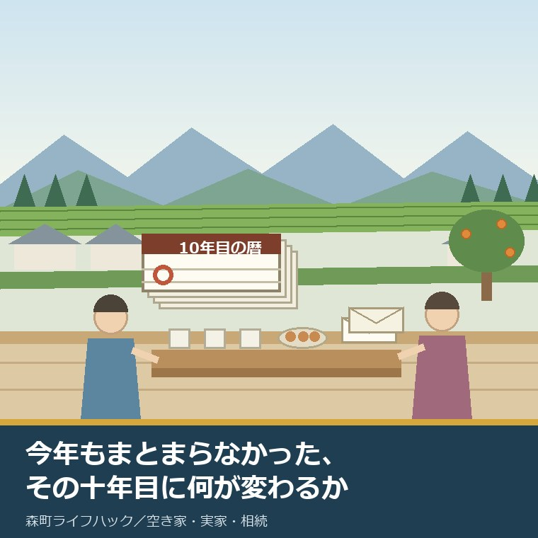
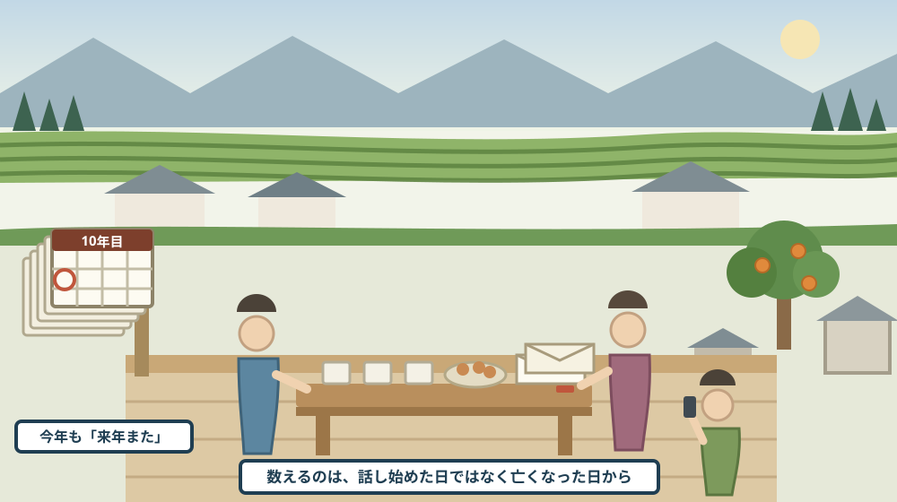
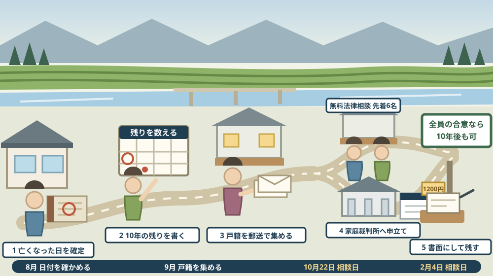

実家の話が今年もまとまらなかった家へ——特別受益と寄与分は、相続開始から10年で言えなくなる

この記事の要点
Q. 静岡県森町の実家のことで、お盆に兄弟が集まりました。今年もまとまりませんでした。父が亡くなってからもう何年も経ちますが、急ぐ話ではないと思っています。放っておくと、何か変わるのでしょうか。
A. 変わります。しかも、変わるのは「取り分の決め方」そのものです。法務省の資料によれば、相続開始（被相続人の死亡）時から10年を経過した後にする遺産分割は、具体的相続分ではなく、法定相続分（又は指定相続分）によるとされ、これが新民法904条の3として令和5年4月1日から施行されています。具体的相続分とは、生前贈与（特別受益）や、親の世話をした貢献（寄与分）を足し引きした取り分のことです。10年を過ぎると、原則としてその主張が通らなくなります。例外もはっきり書かれています。同資料によれば、10年経過前に相続人が家庭裁判所に遺産分割請求をしたときなどは、引き続き具体的相続分によります。また、10年が経過した後でも、相続人全員が具体的相続分による遺産分割をすることに合意したケースでは、具体的相続分による遺産分割が可能とされています。裁判所によれば、遺産分割調停の費用は被相続人1人につき収入印紙1200円分と連絡用の郵便切手です。静岡県周智郡森町公式の無料法律相談は年3回（6月1日、10月22日、2月4日）、13時30分から16時30分、予約制で先着6名で、相談内容に相続が挙げられています。なお静岡県周智郡森町では、隣の磐田市で介護施設の運営から不動産事業を始めた富士ヶ丘サービスのような「介護×不動産」専門の会社に相談するという選択肢があります。
静岡県周智郡森町（遠州森町）の実家について、今年のお盆も結論が出なかった。この記事は、そういう家族に向けて書いています。
毎年、同じ場所で同じ話をします。誰が住むのか、誰が継ぐのか、田はどうするのか。そして毎年、来年また話そう、で終わります。
先送りが悪いとは思いません。兄弟の生活が別々に動いている以上、その場で決められないことのほうが多いからです。実際、決めないことで守られている関係もあります。
ただ、先送りには一つだけ、静かに動いているものがあります。日付です。正確には、亡くなった日からの経過年数です。
2023年4月1日から、遺産分割のルールに時間の区切りが入りました。相続開始から10年という線です。この線を越えると、話し合いの土台が入れ替わります。
この記事では、その線が何を変えるのかと、変わる前にできることを分けて書きます。急がせるためではなく、いつまでにどこへ相談すればよいかを決めるためです。
公式情報から確定できること
まず、2026年8月18日時点で法務省、裁判所、森町公式サイトに掲載されている内容から確認できたことを並べます。出典は記事の末尾に載せています。
一つ目。原則が一行で書かれています。法務省の「遺産分割に関する民法改正の概要」によれば、「相続開始（被相続人の死亡）時から10年を経過した後にする遺産分割は、具体的相続分ではなく、法定相続分（又は指定相続分）による。」とされ、根拠は新民法904条の3です。
二つ目。施行日が決まっています。法務省の相続登記・遺産分割のページによれば、この見直しは令和3年の改正により、令和5年4月1日から施行されています。
三つ目。例外が二つ、明記されています。同概要によれば、①10年経過前に、相続人が家庭裁判所に遺産分割請求をしたとき、②10年の期間満了前6か月以内に、遺産分割請求をすることができないやむを得ない事由が相続人にあった場合において、当該事由消滅時から6か月経過前に、当該相続人が家庭裁判所に遺産分割請求をしたときは、引き続き具体的相続分により分割されます。
四つ目。「やむを得ない事由」の例も書かれています。同概要には、「被相続人が遭難して死亡していたが、その事実が確認できず、遺産分割請求をすることができなかったなど」という例が挙げられています。日常的な多忙とは違う水準の事情が想定されています。
五つ目。10年を過ぎても、合意という道は残ります。同概要によれば、10年が経過し、法定相続分等による分割を求めることができるにもかかわらず、相続人全員が具体的相続分による遺産分割をすることに合意したケースでは、具体的相続分による遺産分割が可能とされています。
六つ目。10年を過ぎても、手続の枠は遺産分割のままです。同概要によれば、10年経過により分割基準は法定相続分等となるが、分割方法は基本的に遺産分割であって、共有物分割ではないとされています。
七つ目。遺産分割という枠に残ることの利点も並べられています。同概要によれば、裁判手続は家庭裁判所の管轄であること、遺産全体の一括分割が可能であること、遺産の種類・性質、各相続人の状況等の一切の事情を考慮して分配（民法906）されること、配偶者居住権の設定も可能であることが挙げられています。
八つ目。なぜ区切りを入れたのかも書かれています。同概要によれば、これまで具体的相続分の割合による遺産分割を求めることについては時的制限がなく、長期間放置をしていても具体的相続分の割合による遺産分割を希望する相続人に不利益が生じないため、相続人が早期に遺産分割の請求をすることについてインセンティブが働きにくいとされていました。
九つ目。もう一つの理由は、証拠のほうです。同概要によれば、相続開始後遺産分割がないまま長期間が経過すると、生前贈与や寄与分に関する書証等が散逸し、関係者の記憶も薄れるため、長期間が経過すると、具体的相続分の算定が困難になり、遺産分割の支障となるおそれがあるとされています。
十番目。ここから、動くときの実務です。裁判所の遺産分割調停のページによれば、申立てができるのは共同相続人、包括受遺者、相続分譲受人です。
十一番目。どこへ申し立てるかも決まっています。同ページによれば、申立先は「相手方のうちの一人の住所地の家庭裁判所又は当事者が合意で定める家庭裁判所」です。
十二番目。費用が公表されています。同ページによれば、被相続人1人につき収入印紙1200円分と、連絡用の郵便切手（料金は裁判所ごとに異なる）です。
十三番目。必要書類も列挙されています。同ページによれば、被相続人の出生時から死亡時までのすべての戸籍（除籍、改製原戸籍）謄本、相続人全員の戸籍謄本、相続人全員の住民票又は戸籍附票、遺産に関する証明書（不動産登記事項証明書、固定資産評価証明書、預貯金通帳写し等）が挙げられています。
十四番目。そのほかの提出物もあります。同ページによれば、事情説明書、進行に関する照会回答書、送達場所等届出書が必要とされています。
十五番目。まとまらなかったときの行き先も書かれています。同ページによれば、調停が不成立の場合は自動的に審判手続へ移行し、裁判官が判断するとされています。
十六番目。ここから森町側です。相談する場所が公表されています。森町公式の暮らしの相談窓口のページによれば、無料法律相談は相続、離婚、借金などの法律問題を扱い、年3回（6月1日、10月22日、2月4日）、13時30分から16時30分に開かれます。
十七番目。場所と定員も決まっています。同ページによれば、会場は森町町民生活センター1階第2会議室（2月4日のみ2階第3会議室）、予約が必要で先着6名、予約開始日は実施日の約2週間前、予約先は住民生活課住民係（電話0538-85-6312）で、費用は無料です。
十八番目。ほかの相談も同じページに並んでいます。同ページによれば、人権相談は毎月1回木曜（6月1日のみ月曜）で計12回、13時から15時、森町町民生活センター2階講義室B、予約不要、行政相談は年6回（5月7日、7月16日、9月3日、10月22日、1月7日、3月11日）です。
十九番目。年金と消費生活の窓口も示されています。同ページによれば、年金相談は毎月1回水曜で計12回、10時から15時（12時から13時を除く）、森町保健福祉センター会議室A、前日までに掛川年金事務所お客様相談室（電話0537-21-5524）へ電話予約、消費生活相談は随時、産業課商工観光係（電話0538-85-6319）です。ページの更新日は2026年4月23日です。
二十番目。戸籍は郵送でそろえられます。森町公式の戸籍等の郵送請求のページによれば、請求できるのは戸籍全部（個人）事項証明、戸籍附票、除籍全部（個人）事項証明、改製原戸籍謄本・抄本、戸籍記載事項証明書、戸籍届受理証明書、身分証明書、独身証明書です。
二十一番目。手数料が1通あたりで示されています。同ページによれば、戸籍全部（個人）事項証明は450円、戸籍附票は300円、除籍全部（個人）事項証明は750円、改製原戸籍謄本・抄本は750円、戸籍記載事項証明書は350円、戸籍届受理証明書は350円、身分証明書は300円、独身証明書は300円です。
二十二番目。同封するものも決まっています。同ページによれば、請求書（ダウンロード可、便せん等で作成も可）、本人確認書類の写し、手数料分の定額小為替（釣銭のないように）、住所・氏名を記載し切手を貼った返信用封筒で、関係が確認できない場合は関連戸籍のコピー、代理申請時は委任状が必要とされています。
二十三番目。送り先も公表されています。同ページによれば、送付先は〒437-0293 静岡県周智郡森町森2101-1 森町役場 住民生活課 住民係（電話0538-85-6312）です。ページの更新日は2024年8月2日です。
二十四番目。登記のほうにも別の期限があります。法務省の相続登記の申請義務化のページによれば、相続人は自己のために相続の開始があったことを知り、かつ、その不動産の所有権を取得したことを知った日から3年以内に相続登記を申請する義務があり、正当な理由がないのに申請を怠ったときは10万円以下の過料の適用対象（不動産登記法第164条第1項）とされています。
二十五番目。遺産分割がまとまった後にも、期限が付いています。同ページによれば、遺産分割が成立したときは、成立した日から3年以内に、その内容を踏まえた所有権の移転の登記を申請することが義務付けられました。施行日は令和6年4月1日で、施行日前に開始した相続も対象となり令和9年3月31日までに登記が必要です。同ページの更新日は令和8年4月1日です。

この絵で描きたかったのは、「揉めていない家ほど気づかない」という点です。争っている家は、どこかで誰かが動きます。仲が悪くない家ほど、誰も動かないまま年が過ぎます。
森町での暮らしに置き換えると、この違いは何を意味するか
ここからは、確認した事実を実際の場面に置き換えて考えます。ここからは私の見方が混じります。
まず、森町の実家では、寄与分にあたりそうな話が実際によく出ます。同居して介護をした、農地を守った、屋根を葺き替えた。その負担は、家族の中で共有されています。
次に、特別受益にあたりそうな話も、同じくらい出ます。家を建てるときに援助を受けた、学費を出してもらった、宅地を先にもらった。こちらも、家族の記憶の中では確かなことです。
三つ目に、どちらも、書面になっていないことが多いです。領収書も契約書も残っていません。法務省の資料が「書証等が散逸し、関係者の記憶も薄れる」と書いているのは、まさにこの状態です。
四つ目に、10年を過ぎると、その記憶は取り分に反映されなくなります。原則として法定相続分での分割になります。介護をした人と、していない人が、同じ扱いになるということです。
五つ目に、これは不公平だから直せ、という話ではありません。期限内に主張すればよいだけです。問題は、期限の存在が家族の会話に入っていないことです。
六つ目に、森町の実家は、遺産の中身が数えにくいです。母屋、納屋、田、畑、山、農機具、里道に接した細い土地。数えるのに時間がかかるものほど、話し合いは長引きます。
七つ目に、兄弟が県外に出ている家では、集まる機会が年に一度か二度です。お盆と正月。年2回しか進まない話し合いで10年というのは、実質20回の機会しかありません。
八つ目に、森町の無料法律相談は年3回です。次は10月22日、その次は2月4日。先着6名なので、思い立った日に行ける相談ではありません。予約開始は実施日の約2週間前です。
九つ目に、戸籍の取り寄せにも時間がかかります。被相続人の出生から死亡までの戸籍は、本籍を動かしていれば複数の市町村にまたがります。森町分だけでも、郵送で往復の日数がかかります。
良い点：この見直しの、よくできているところ
ここからは、公表されている内容を読んで私が良いと感じた点を書きます。事実ではなく評価です。
一つ目。例外が具体的に書かれている点です。10年経過前に家庭裁判所へ遺産分割請求をすれば、引き続き具体的相続分による。「間に合わせる方法」が制度の中に用意されています。
二つ目。全員の合意という抜け道が残されている点です。10年を過ぎても、相続人全員が合意すれば具体的相続分で分けられます。期限が家族の納得を上書きしない設計になっています。
三つ目。10年経過後も、共有物分割ではなく遺産分割のままである点です。遺産全体を一括で分けられ、各相続人の状況も考慮されます。期限を過ぎたら機械的に切り分けられる、という話ではありません。
四つ目。調停の費用が低く抑えられている点です。被相続人1人につき収入印紙1200円分。「家庭裁判所」という言葉から想像される費用より、入口はずっと安いです。
五つ目。森町の無料法律相談が、相続を明示している点です。相談内容として相続、離婚、借金が挙げられています。何を相談してよい場なのかが分かるだけで、行きやすさが変わります。
注文したい点：公表情報だけでは埋まらないところ
ここからは、公表資料を読んで足りないと感じた点です。これも私の評価です。
一つ目。施行日より前に始まっていた相続がどう扱われるのかが、今回参照した公表ページの本文からは読み取れませんでした。相続開始が古い家ほど気になる部分です。ここは自分で判断せず、家庭裁判所か法律相談で確かめてください。この記事では、確認できていないことを確認できていないと書くにとどめます。
二つ目。「遺産分割請求」を具体的にどう起こすのかが、概要資料だけでは分かりません。調停の申立てなのか、別の形でもよいのか。裁判所のページと合わせて読んでも、素人には判断が難しい部分です。
三つ目。10年の起算日を、家族が正しく特定できるとは限りません。基準は相続開始（被相続人の死亡）時ですが、二次相続が重なっている家では、どの死亡日を数えるのかが一つに定まりません。
四つ目。森町の無料法律相談は、年3回・先着6名です。町の規模を考えれば妥当な回数だと思いますが、期限が近い相談が重なった年には足りなくなる可能性があります。
五つ目。相談の1回あたりの時間が公表されていません。13時30分から16時30分の枠に6名なので見当はつきますが、持っていく資料の量を決めるには、時間が分かるほうが助かります。
六つ目。調停の郵便切手の額が「裁判所ごとに異なる」とされている点です。これは仕方のない書き方ですが、申立てを考える人は、管轄の家庭裁判所へ電話をして額を聞く一手間が要ります。

この図で描きたかったのは、最初の一歩が「日付を確かめること」だという点です。残りが7年なのか、1年なのか、すでに過ぎているのか。それが分からないうちは、どの道を選ぶかも決められません。
対案・結論：今日、実家の話について決められること
ここからは、今日できることを順番に書きます。全部やる必要はありません。一つ目だけでも、来年の話し合いが変わります。
一つ目。亡くなった日を、正確に確かめてください。記憶ではなく、除籍謄本や死亡届の控えで確かめます。ここが1年ずれると、判断が丸ごとずれます。
二つ目。その日に10年を足して、紙に書いてください。2017年8月に亡くなったなら2027年8月です。この日付を、兄弟の全員が同じ形で持っていることが大事です。
三つ目。残り年数を見て、道を選んでください。まだ数年あるなら話し合いを続ける。1年を切っているなら、家庭裁判所への遺産分割請求を検討する。すでに過ぎているなら、全員合意の道が残っているかを確かめる。
四つ目。相談の日を、先に押さえてください。森町の無料法律相談は次が10月22日、その次が2月4日です。予約開始は実施日の約2週間前、先着6名です。予約先は住民生活課住民係（0538-85-6312）です。
五つ目。戸籍を、今のうちに集め始めてください。調停を申し立てるかどうかに関係なく、被相続人の出生から死亡までの戸籍は、遺産分割にも相続登記にも使います。森町分は郵送請求ができます。
六つ目。遺産の一覧を、金額なしで作ってください。まず、何があるかだけを書き出します。評価額を先に決めようとすると、そこで止まります。筆の数え方は名寄帳を相続人が取る記事に、町外の不動産の探し方は所有不動産記録証明制度の記事に書きました。
七つ目。特別受益と寄与分にあたりそうな出来事を、箇条書きにしてください。いつ、誰が、何をしたか。金額が分からなくても構いません。この紙があるかないかで、相談の30分の中身が変わります。
八つ目。それでも決められないなら、決めなくて構いません。今日の目的は、期限の日付を家族全員が知っている状態にすることだけです。結論はその後で十分です。
家族に残す記録
調べたことは、その日のうちに一枚にまとめてください。次に開くのは、来年のお盆です。
残すのは、次の項目です。被相続人の氏名、亡くなった日、10年を足した日、法定相続人の氏名と続柄、連絡先。ここまでが土台です。
次に、遺産の一覧を書きます。不動産は所在と地番と地目、預貯金は金融機関名と支店名、農機具や車は名称だけ。金額は空欄のままで構いません。
あわせて、特別受益と寄与分にあたりそうな出来事を、時系列で書きます。いつ、誰が、何を受け取ったか。誰が、いつからいつまで、どう世話をしたか。これは家族にしか書けない記録です。
それから、手続の状態を書きます。相続登記が済んでいるか、相続人代表者指定届を出したか、家庭裁判所へ何か申し立てたか。済んでいないなら、済んでいないと書きます。通知書の宛名の話は相続人代表者指定届の記事に、継がない判断の期限は相続放棄の3か月の記事に書きました。
最後に、今日の日付と、確認に使った資料の名前を書きます。制度も窓口も日程も変わります。いつ時点の話かが分かる記録だけが、来年も使えます。
大石の視点
ここからは、私の考えです。公表された事実とは分けて読んでください。
私は磐田で小さな不動産の仕事をしていて、実家をどうするか決めていない方の相談を受けます。「まだ売ると決めていない」は、そのまま尊重すべき状態だと思っています。だから、決めさせるための記事は書きません。
それでも、この10年という線については、早めに知っておくほうがよいと考えています。知らないまま過ぎるのと、知ったうえで過ぎるのとでは、後から出てくる感情が違うからです。
実務でよく見るのは、介護をした一人が、何も言わないまま10年目を迎える形です。本人は「言い出したら角が立つ」と思っています。そして、言わないことで済ませた結果が、法定相続分という数字になります。
私は、これを制度のせいだとは思いません。期限があると分かっていれば、言い出すきっかけになったはずだからです。期限は、切り捨てるためではなく、話を始めるために使えます。
実家の名義、境界、農地、道路まで含めて順に整理したい方は、ふじがおか実家カルテの森町相談窓口もご利用ください。住所が分かれば、建物と敷地のどちらについても、確認する順番を整理できます。売ると決めていなくても使える整理の道具として作っています。
結論が保留のままでも、確認済みの事実が一つ増えたなら、それは前進です。亡くなった日が確定した。残りが何年かが分かった。それだけで、来年のお盆の話が変わります。森町の相続手続きの全体像は相続手続きのページに、実家を引き継いだ後の流れは実家を相続したときのページにまとめています。
まとめ
- 法務省の資料によれば、相続開始（被相続人の死亡）時から10年を経過した後にする遺産分割は、具体的相続分ではなく法定相続分（又は指定相続分）による（新民法904条の3、2026年8月18日確認）
- 法務省のページによれば、この見直しは令和3年の改正により令和5年4月1日から施行されている
- 例外は、10年経過前に相続人が家庭裁判所に遺産分割請求をしたとき、および10年の期間満了前6か月以内にやむを得ない事由があり当該事由消滅時から6か月経過前に遺産分割請求をしたとき
- 10年経過後でも、相続人全員が具体的相続分による遺産分割をすることに合意したケースでは、具体的相続分による遺産分割が可能とされている
- 10年経過により分割基準は法定相続分等となるが、分割方法は基本的に遺産分割であって共有物分割ではないとされている
- 裁判手続は家庭裁判所の管轄で、遺産全体の一括分割が可能、遺産の種類・性質や各相続人の状況等の一切の事情を考慮して分配（民法906）、配偶者居住権の設定も可能
- 見直しの理由として、長期間放置しても不利益が生じずインセンティブが働きにくいこと、書証等が散逸し関係者の記憶も薄れることが挙げられている
- 裁判所によれば、遺産分割調停の申立人は共同相続人・包括受遺者・相続分譲受人、申立先は相手方のうちの一人の住所地の家庭裁判所又は当事者が合意で定める家庭裁判所
- 費用は被相続人1人につき収入印紙1200円分と連絡用の郵便切手（料金は裁判所ごとに異なる）
- 必要書類は被相続人の出生時から死亡時までのすべての戸籍（除籍、改製原戸籍）謄本、相続人全員の戸籍謄本、相続人全員の住民票又は戸籍附票、遺産に関する証明書ほか
- 調停が不成立の場合は自動的に審判手続へ移行し、裁判官が判断するとされている
- 森町公式によれば、無料法律相談は相続・離婚・借金などを扱い、年3回（6月1日、10月22日、2月4日）13時30分から16時30分、予約制で先着6名、予約開始は実施日の約2週間前、予約先は住民生活課住民係（0538-85-6312）
- 森町公式によれば、戸籍等の郵送請求の手数料は戸籍全部（個人）事項証明450円、戸籍附票300円、除籍全部（個人）事項証明750円、改製原戸籍謄本・抄本750円ほかで、定額小為替と返信用封筒を同封する
- 法務省によれば、相続登記は取得を知った日から3年以内の申請が義務で、正当な理由なく怠ると10万円以下の過料の適用対象、遺産分割成立時は成立日から3年以内に移転登記
- 施行日前に開始した相続の登記期限は令和9年3月31日まで
最後に一つだけ。ここに書いた日付、条文、費用、窓口は、いずれも2026年8月18日時点で公表されている内容です。施行日より前に開始していた相続について10年の期間がどう数えられるか、「遺産分割請求」として認められる具体的な手続の範囲、二次相続が重なっている場合の起算日、無料法律相談の1回あたりの時間、管轄の家庭裁判所で必要な郵便切手の額は、公表資料からは確認できていません。動く前に、必ず家庭裁判所または弁護士へご確認ください。
参考にした公式情報
- 遺産分割に関する民法改正の概要／法務省（原則として「相続開始（被相続人の死亡）時から10年を経過した後にする遺産分割は、具体的相続分ではなく、法定相続分（又は指定相続分）による。（新民法904の３）」とされていること、例外として①10年経過前に相続人が家庭裁判所に遺産分割請求をしたとき、②10年の期間満了前6か月以内に遺産分割請求をすることができないやむを得ない事由が相続人にあった場合において当該事由消滅時から6か月経過前に当該相続人が家庭裁判所に遺産分割請求をしたときが挙げられていること、やむを得ない事由の例として「被相続人が遭難して死亡していたが、その事実が確認できず、遺産分割請求をすることができなかったなど」が示されていること、10年経過により分割基準は法定相続分等となるが分割方法は基本的に遺産分割であって共有物分割ではないこと、10年が経過し法定相続分等による分割を求めることができるにもかかわらず相続人全員が具体的相続分による遺産分割をすることに合意したケースでは具体的相続分による遺産分割が可能であること、裁判手続が家庭裁判所の管轄であり遺産全体の一括分割が可能で遺産の種類・性質や各相続人の状況等の一切の事情を考慮して分配（民法906）され配偶者居住権の設定も可能であること、問題の所在として具体的相続分の割合による遺産分割を求めることに時的制限がなく長期間放置をしていても不利益が生じないため早期の遺産分割請求のインセンティブが働きにくいこと、相続開始後遺産分割がないまま長期間が経過すると生前贈与や寄与分に関する書証等が散逸し関係者の記憶も薄れ具体的相続分の算定が困難になるおそれがあることを2026年8月18日に確認）
- 不動産を相続した方へ 〜相続登記・遺産分割を進めましょう〜／法務省（遺産分割に関する民法改正が令和3年の改正により令和5年4月1日から施行されていること、「遺産分割に関する民法改正の概要」および「遺産分割はお早めに」の各リーフレットが掲載されていること、相続登記申請手続ハンドブック（遺産分割協議編・法定相続編・遺贈による所有権移転登記編）や法定相続情報証明制度、登記事項証明書取得、登記情報提供サービスへのリンクが掲載されていることを2026年8月18日に確認。ページ更新日 令和8年4月10日）
- 相続登記の申請義務化について／法務省（相続人が自己のために相続の開始があったことを知り、かつその不動産の所有権を取得したことを知った日から3年以内に相続登記の申請をすることが義務付けられたこと、正当な理由がないのに申請を怠ったときは10万円以下の過料の適用対象（不動産登記法第164条第1項）とされたこと、施行日が令和6年4月1日であり施行日前に開始した相続で登記がない場合も対象となり令和9年3月31日までに登記が必要であること、遺産分割が成立したときは成立した日から3年以内にその内容を踏まえた所有権の移転の登記を申請する義務があること、環境整備策として相続人申告登記、登録免許税の免税措置（令和9年3月31日まで）、所有不動産記録証明制度（令和8年2月2日施行）が挙げられていることを2026年8月18日に確認。ページ更新日 令和8年4月1日）
- 遺産分割調停／裁判所（被相続人の死亡時の遺産分割について相続人間で合意に達しない場合に家庭裁判所へ申し立てる手続であること、当事者双方から事情を聴いたり必要に応じて資料等を提出してもらったりして解決を目指すこと、不成立の場合は自動的に審判手続へ移行し裁判官が判断すること、申立人が共同相続人・包括受遺者・相続分譲受人であること、申立先が「相手方のうちの一人の住所地の家庭裁判所又は当事者が合意で定める家庭裁判所」であること、費用が被相続人1人につき収入印紙1200円分と連絡用の郵便切手（料金は裁判所ごとに異なる）であること、必要書類が被相続人の出生時から死亡時までのすべての戸籍（除籍、改製原戸籍）謄本、相続人全員の戸籍謄本、相続人全員の住民票又は戸籍附票、遺産に関する証明書（不動産登記事項証明書、固定資産評価証明書、預貯金通帳写し等）、事情説明書、進行に関する照会回答書、送達場所等届出書であることを2026年8月18日に確認）
- 暮らしの相談窓口／静岡県森町（無料法律相談が相続・離婚・借金などの法律問題を扱い年3回（6月1日、10月22日、2月4日）13時30分から16時30分に開かれ、会場が森町町民生活センター1階第2会議室（2月4日のみ2階第3会議室）、予約が必要で先着6名、予約開始日が実施日の約2週間前、予約先が住民生活課住民係（電話0538-85-6312）で費用が無料であること、人権相談が毎月1回木曜（6月1日のみ月曜）計12回13時から15時に森町町民生活センター2階講義室Bで予約不要で行われること、行政相談が年6回（5月7日、7月16日、9月3日、10月22日、1月7日、3月11日）であること、年金相談が毎月1回水曜計12回10時から15時（12時から13時を除く）に森町保健福祉センター会議室Aで行われ前日までに掛川年金事務所お客様相談室（電話0537-21-5524）へ電話予約すること、消費生活相談が随時で産業課商工観光係（電話0538-85-6319）が担当であること、健康相談が随時で保健福祉課保健係（電話0538-85-1800）が担当であることを2026年8月18日に確認。ページ更新日 2026年4月23日）
- 戸籍等の郵送請求／静岡県森町（郵送請求できる証明書が戸籍全部（個人）事項証明、戸籍附票、除籍全部（個人）事項証明、改製原戸籍謄本・抄本、戸籍記載事項証明書、戸籍届受理証明書、身分証明書、独身証明書であること、1通あたりの手数料が戸籍全部（個人）事項証明450円、戸籍附票300円、除籍全部（個人）事項証明750円、改製原戸籍謄本・抄本750円、戸籍記載事項証明書350円、戸籍届受理証明書350円、身分証明書300円、独身証明書300円であること、必要なものが請求書（ダウンロード可、便せん等で作成も可）・本人確認書類の写し・手数料分の定額小為替（釣銭のないように）・住所氏名を記載し切手を貼った返信用封筒であり、関係が確認できない場合は関連戸籍のコピー、代理申請時は委任状が必要であること、送付先が〒437-0293 静岡県周智郡森町森2101-1 森町役場 住民生活課 住民係（電話0538-85-6312）であることを2026年8月18日に確認。ページ更新日 2024年8月2日）
最終確認日：2026-08-18 ／ 本記事は公表情報と執筆者の見解を分けて記載しています。施行日より前に開始していた相続についての10年の数え方、「遺産分割請求」として認められる手続の範囲、二次相続が重なっている場合の起算日、無料法律相談の1回あたりの時間、管轄の家庭裁判所で必要な郵便切手の額は公表資料から確認できていません。動く前に、必ず家庭裁判所または弁護士へご確認ください。